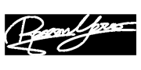

Bio
Curious to know how I ended up here?
What decisions have had the biggest impact on my life so
far?
And what are my plans for the future? Scroll down to find out.
Highlights
- Age: 26
- Born in: Castelfranco Veneto (TV)
- Occupation: Student
- Degrees: It's complicated (read below)
- Passions: Technology, languages, finance
- Dreams: Make the world a better place
Features
- Proactive mindset

- Curiosity
- Patience

- Creativity
- Precision

The only constant in life is change
I was born in Castelfranco Veneto in 1998. I've always been passionate about technology. When I was little, my parents used to buy manuals that came with the newspaper to learn how to use Word and Excel, and I would study them all. A fun pastime, right? As I grew up, I decided to follow this passion by enrolling in the technical institute in my city, majoring in computer science and telecommunications. At this point, you might think that's the end of the story, right? He graduates and starts working at an IT company, or at most, goes to university to continue his studies in this field.
THAT'S NOT HOW IT WENT.
I did, actually, go to university, but to study Chinese. First plot twist of this story. I made the decision in the last year of high school, I like to say following a trip to Stockholm with some friends. There I realized that I would be missing out on an opportunity if I didn't go to university. Moreover, I felt the need to completely change my field of study. And here I am in August 2017. Venice, a blank sheet of paper and a pen in hand, ready to take the entrance exam for the three-year degree course in Language, Culture, and Society of Asia and Mediterranean Africa. Many times I found myself thinking, "Who made me do it?" But the answers will come later, don't worry. Everything will make sense.
Once I decide to do something, I have to do it well. So, I applied for the double degree program with Capital Normal University in Beijing. I passed. In August 2019, I said goodbye to Italy and found myself in one of the largest megacities in the world. The goal was to stay there for two years and obtain a double degree. I did get the double degree, but things didn't go as planned. expected.
In December 2019, I pack my bags and prepare to return to Italy for the winter holidays."See you in February," I said to some friends.
THAT'S NOT HOW IT WENT.
"I land in Italy (with a fever of 40, by the way). The day after, the beginning of the Covid-19 pandemic is declared in China, and with it, the hopes of returning to China are reduced to zero. After an initial moment of confusion, we eventually receive instructions to continue the project online. Unfortunately, online, for those of us in Italy, meant having classes at night. And so it was, for a year and a half, the school bell rang at 2:30 in the night, lessons all night long, until morning light. If I could go back, I wouldn't do it again, but I did it, and it didn't even felt too hard to do. After all, you couldn't go anywhere except home during that time."
After completing the two degrees, I decide to further my education with a master's degree in economics from the same department, with a blend of linguistic and managerial skills. This time, I attended classes in person, in Venice. I delved deeper into the Chinese language and ventured into the world of business management, learning terms like "horizontal structure," "activities," and "call-option".
Once I've graduated, it's all said and done, right? I'll be joining a company "that deals with China" (like all the people surrounding me used to said) and travel the world doing sales and talking to the business people from the red dragon.
THAT'S NOT HOW IT WENT.
Thanks to the career service of the university, I found an opportunity at a well-known insurance agency in my area. I interviewed. They hired me. I start gaining my first experiences in the working world, understanding how an office is structured, how a commercial initiative is carried out, and much more. After 6 months, I take on the role of project manager in the field of wealth management consulting and begin to create a consistent and coherent proposal for the agency's clients. Well, you might say, he's found his path, he'll continue in this sector, and everyone lived happily ever after.
THAT'S NOT HOW IT WENT. (this is the last one, I swear)
I decide to leave that path behind, aware of the lessons learned and with the determination to make a difference in the world of the future. And what better choice than to return to where this whole story began. To the digital world. I start a master's program with start2impact university in blockchain development, curious to understand how this new technology works and how it can be applied in the real world. I've just started, but I can already see that the master's program not only prepares you to develop applications on the blockchain but also provides you with context and equips you with the tools to navigate this intricate and complex world with agility.
And this website is a testament to that. It was created entirely by me as part of the HTML & CSS course.
THAT'S NOT... just kidding, the story ends here. (for now)
My journey so far has been varied, unpredictable, without (seemingly) a coherent logic. But that's precisely what's beautiful about it. I find myself having skills (like linguistic ones) that I wouldn't have had if I had followed a static path in the world of computer science from the beginning.
If you've read this far, I thank you. I hope that my story can be an inspiration to other young people who don't have a clear idea of what they want to become when they grow up. Because one thing I've learned is that many of these 'grown-ups' have a lot to learn from us young people, and not just the other way around.
If you'd like to reach out to share your experience or discuss a project, feel free to write to me via the 'Contact Me' section.
And in case I don't see you, good afternoon, good evening, and goodnight.
Marco Roccon 